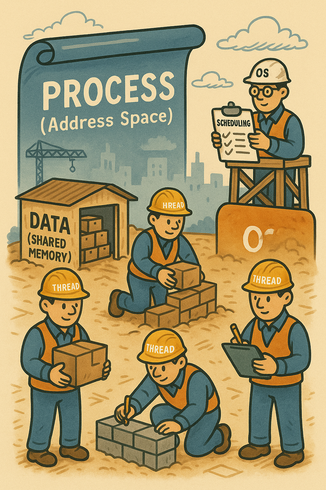
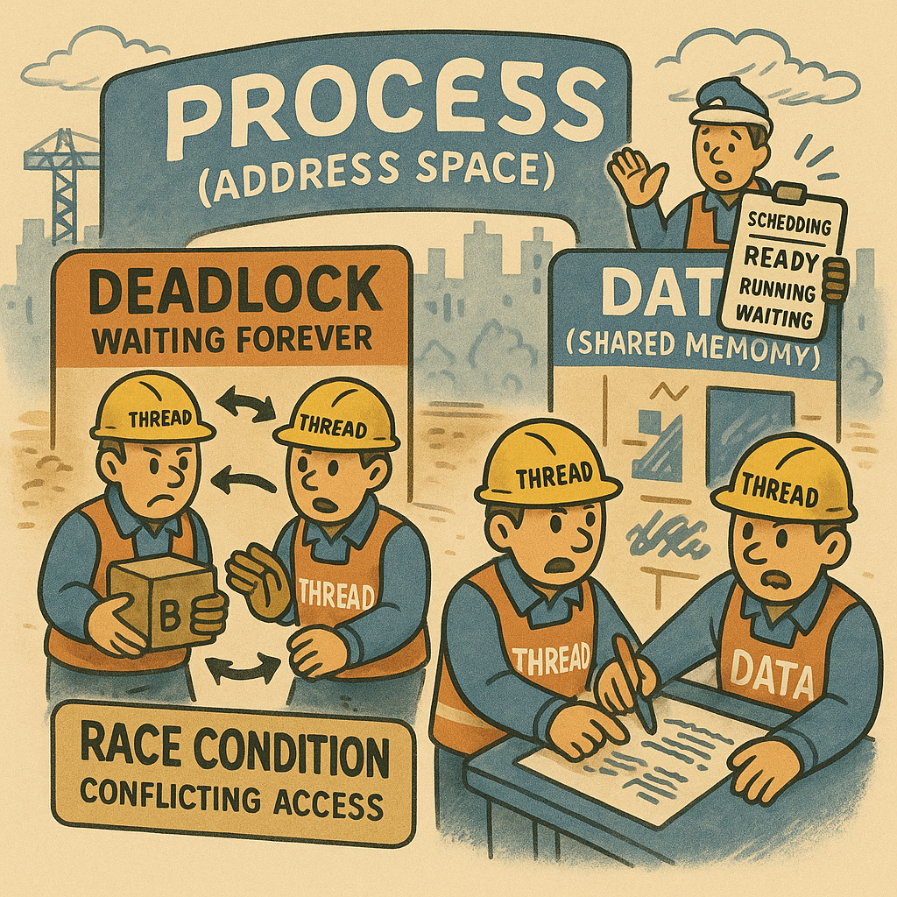
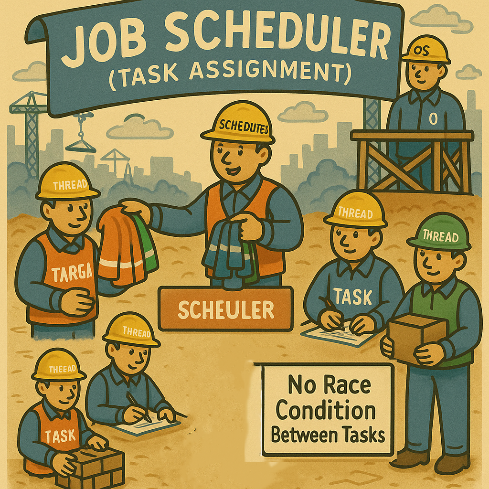
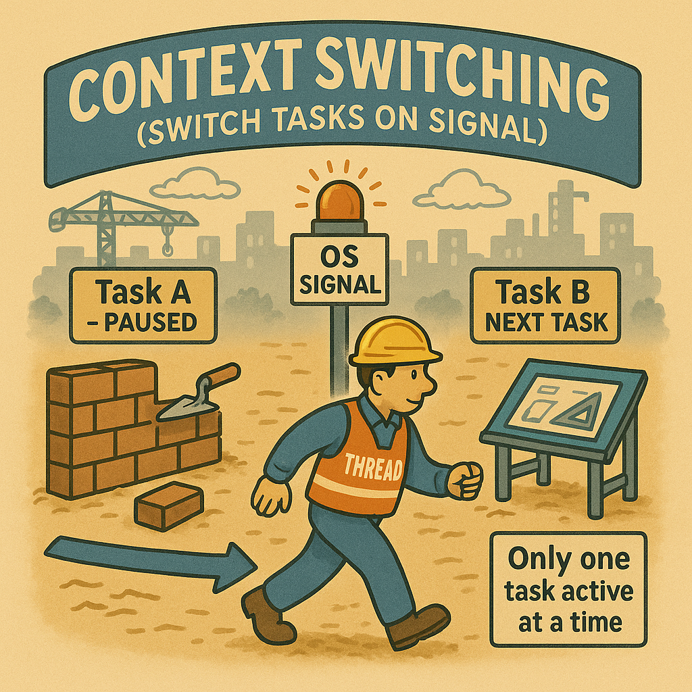

프로세스 & 스레드 – 운영체제 위에서 게임이 돌아가는 방식
교과서 개념을 그대로 옮기기보다는, 하나의 공사장 비유와 삽화를 통해 “게임 엔진이 운영체제 위에서 어떻게 실행되는지”를 이해하고 정리한 학습 포트폴리오다.
게임 클라이언트 프로그래머에게 운영체제의 프로세스와 스레드 구조는 단순한 이론이 아니다. 프레임 유지, 입력 처리 타이밍, 렌더링 파이프라인, 비동기 작업은 모두 OS 위에서 돌아가는 프로세스와 스레드, 스케줄링 구조에 영향을 받는다.
이 문서는 교과서의 정의를 외우는 대신, 하나의 건설 현장 비유를 사용해 프로그램이 실행되는 전체 흐름(프로그램 로딩 → 프로세스/스레드 구조 → 동시성 → 스케줄러 → 컨텍스트 스위칭)을 그림과 함께 정리한 학습 기록이다. “실제로 게임 엔진이 OS 위에서 어떻게 돌아가는가?”를 이해하는 것을 목표로 했다.
전체 구성은 다음 다섯 단계로 이루어져 있다.
프로그램 로딩 & 메모리 구조 – 설계도를 현장으로 가져오기
삽화

학습일지
디스크에 있을 때 실행 파일은 그저 종이 설계도에 가깝다. 사용자가 프로그램을 실행하면 OS의 로더(Loader)가 동작해서 이 설계도를 읽고, 메모리 위에 코드, 데이터, 스택(그리고 힙) 구역을 가진 하나의 주소 공간으로 펼친다.
이 주소 공간이 곧 하나의 공사 현장(프로세스)이다. CODE 영역에는 “어떤 자재를 어떻게 가공하고 조립해 공사를 진행할지”를 적어 둔 시공법(함수) 설계서가 모여 있고, DATA 영역은 공사에 쓸 자재를 쌓아 둔 자재 창고, STACK 영역은 현재 진행 중인 공정에 필요한 시공법 페이지와 특수 자재/도구를 임시로 올려 두는 선반처럼 볼 수 있다.
로더는 필요한 라이브러리를 연결하고 초기화 코드를 실행한 뒤, 마지막에 엔트리 포인트(main 등)로 점프한다. 이 시점부터 CPU 입장에서는 “이 현장에서 어떤 일을 할지”만 처리하면 된다.
- 디스크의 실행 파일 → 메모리 속 프로세스 주소 공간으로 변환
- CODE 영역: 기계어 명령, DATA 영역: 전역/정적 데이터
- STACK: 함수 호출·지역 변수를 위한 작업 공간
“컴파일”은 설계도를 만드는 과정이고, “로딩”은 그 설계도로 실제 공사 현장을 여는 과정이라는 비유가 가장 이해가 잘 됐다.
프로세스와 스레드 – 하나의 현장과 여러 작업조
삽화
학습일지
프로세스는 OS 입장에서 하나의 큰 실행 단위다. 각 프로세스는 자신만의 CODE / DATA / STACK / HEAP이 있는 독립적인 주소 공간을 가지고, 보통 프로그램 하나당 프로세스 하나가 생성된다.
엄밀히 말하면 우리가 쓰는 윈도우나 안드로이드 운영체제 자체도 결국 하나의 거대한 프로세스 집합 위에 돌아간다. 사용자가 게임을 실행하면 OS는 그 위에 새로운 프로세스를 “하나의 공사 현장”처럼 올리는 것에 가깝고, 각 현장은 서로의 자재 창고와 도면을 직접 들여다볼 수 없다 (필요하면 OS가 제공하는 API를 통해서만 간접적으로 소통한다).
한편 스레드는 이 프로세스 내부에서 움직이는 “작업조”다. 스레드는 서로 같은 CODE / DATA / HEAP을 공유하되, 자신만의 스택을 가진다. 같은 현장 안에서 여러 작업조가 동시에 일하면서도, 각 작업조가 들고 있는 작업 순서와 임시 도구(지역 변수)는 따로 관리되는 셈이다.
- 프로세스: OS가 관리하는 독립적인 공사 현장
- 스레드: 같은 현장 안에서 돌아가는 여러 작업조
- 공유: CODE / DATA / HEAP, 개별 스택은 스레드마다 따로
처음에는 “프로세스 vs 스레드”를 그냥 추상적인 실행 단위로만 외우고 있었는데, “하나의 현장 안에서 작업조들이 창고를 같이 쓰는 구조”라고 이해하니 동시성 문제(레이스컨디션, 데드락 등)가 왜 생기는지 훨씬 잘 보이기 시작했다.
레이스컨디션 & 데드락 – 같은 자재를 동시에 만질 때 생기는 문제
삽화
학습일지
스레드가 같은 DATA(자재 창고)를 공유한다는 것은, 여러 작업조가 동시에 같은 자재 더미를 만질 수 있다는 뜻이다. 이때 누가 먼저, 어떤 순서로 자재를 가져갔는지에 따라 결과가 달라질 수 있다. 이게 바로 레이스컨디션이다.
또 서로 자재를 하나씩 쥔 채, 상대가 들고 있는 자재를 기다리기만 한다면 공사가 영원히 진행되지 않는 데드락이 발생한다. 실제 코드에서는 락을 거는 순서가 뒤섞일 때 이런 상황이 만들어진다.
- 레이스컨디션: 실행 순서에 따라 결과가 달라지는 상황
- 데드락: 서로 상대의 자원을 기다리느라 영원히 멈추는 상황
- 해결책: 임계구역 설정, 락 순서 정하기, 타임아웃 등
게임 코드에서 “가끔 한 번씩 튀는 버그”가 왜 발생하는지, 그리고 멀티스레드 환경에서 재현이 어려운 버그가 왜 무섭다고 하는지 공사 현장 비유를 통해 직관적으로 이해할 수 있었다.
스케줄러 – CPU 시간을 어떻게 나눠 쓸 것인가
삽화
학습일지
실제 하드웨어 레벨에서 CPU 코어 하나는 한 순간에는 하나의 스레드만 실행한다. (하이퍼스레딩 등으로 한 코어가 여러 스레드를 번갈아 처리할 수 있지만, 결국 한 클럭 사이클에는 하나의 명령만 실행된다는 점은 같다.)
그런데 우리 눈에는 여러 프로그램이 동시에 실행되는 것처럼 보인다. 이는 OS의 스케줄러가 아주 짧은 타임슬라이스 단위로 “이번에는 이 스레드, 다음에는 저 스레드”를 번갈아 CPU에 올리기 때문이다. 여러 코어가 있다면 각 코어에 동시에 다른 스레드를 올릴 수도 있다.
- 단일 코어: 한 순간에는 한 스레드만 실행
- 멀티 코어: 코어 수만큼 여러 스레드가 병렬 실행
- 스케줄러: 어떤 스레드에 얼마나 자주, 얼마나 길게 CPU를 줄지 결정
게임 루프, 렌더링 스레드, 자원 로딩 스레드 등이 스케줄링 정책에 따라 CPU 시간을 나눠 쓰기 때문에, 프레임 드랍이나 입력 지연 문제를 볼 때도 “이 스레드들이 CPU를 어떻게 쓰고 있나?”라는 관점으로 바라볼 수 있게 되었다.
컨텍스트 스위칭 – 작업대를 바꾸면서 상태를 저장·복원하기
삽화
학습일지
컨텍스트 스위칭은 말 그대로 CPU가 실행 중인 스레드를 바꾸는 과정이다. 이때 OS는 현재 스레드의 레지스터 값, 프로그램 카운터, 스택 포인터 등 실행 상태를 저장하고, 다음에 실행할 스레드의 상태를 다시 레지스터에 복원한다.
공사 현장 비유로 보면, 작업자가 현재 작업대를 떠나기 전에 “어디까지 했는지, 지금 어떤 도구를 들고 있는지”를 선반에 정리해 두고, 다른 작업대로 이동해 그 작업의 상태를 다시 꺼내 오는 과정에 가깝다.
- 컨텍스트: 스레드가 어디까지 무엇을 하고 있었는지에 대한 상태 정보
- 스위칭: 이전 컨텍스트 저장 → 새 컨텍스트 복원
- 비용: 스위칭이 잦을수록 오버헤드 증가
컨텍스트 스위칭의 비용을 이해하고 나니, “스레드를 많이 쓰면 무조건 좋은가?”에 대한 고민을 하게 되었다. 게임 클라이언트에서는 “실제로 병렬화가 필요한 작업”만 스레드로 분리하고, 나머지는 메인 스레드에서 일괄 처리하는 구조가 왜 많이 쓰이는지도 함께 이해할 수 있었다.
성과
이번 운영체제(Process · Thread) 파트를 학습하며, 게임 클라이언트 프로그래머에게 프로세스 구조와 스레드 실행 방식이 단순 이론을 넘어 프레임 유지, 입력 처리 타이밍, 비동기 로딩, 렌더링 구조 등 실질적인 개발 전반에 직결된다는 점을 명확히 이해하게 되었습니다.
특히 공사장 비유를 기반으로 전체 실행 흐름을 재정리하면서, 프로그램 로딩 → 프로세스 주소 공간 → 스레드 공유 메모리 → 동시성 문제 → 스케줄러 → 컨텍스트 스위칭까지의 구조가 서로 어떤 방식으로 연결되어 실제 게임 실행에 영향을 주는지 하나의 일관된 흐름으로 설명할 수 있게 된 점이 가장 큰 성과였습니다.
이제는 OS가 CPU 시간을 어떻게 배분하고, 어떤 상황에서 병렬 처리가 필요하며, 언제 스레드가 오히려 병목을 만들 수 있는지 판단할 수 있게 되었고, 이러한 이해를 통해 더 안정적인 게임 코드 구조를 설계할 수 있는 기반을 갖추게 되었습니다.